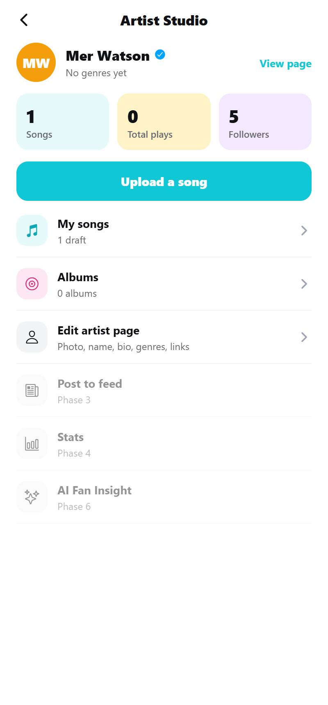
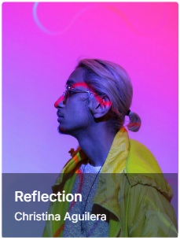

Giai đoạn 4 – Thống kê cho nghệ sĩ BẢN 2
BẢN XEM TRƯỚCMockup để duyệt trước khi code. Màu, cỡ chữ, ô số liệu và danh sách lấy theo các màn Artist Studio đang chạy. Chỗ có nhãn MỚI là phần được thêm. Số liệu trong ảnh chỉ là ví dụ.
- Thay đổi so với bản 1 (theo câu trả lời của bạn):
- Thêm mốc "All time" (từ trước tới nay) bên cạnh 7 ngày và 30 ngày – màn mới T6.
- Luật chống tăng ảo giữ như đề xuất (đã đồng ý).
- Nguồn lượt nghe ("Where plays come from") thành phần chính thức: có ở T1 (toàn bộ bài) và T3 (từng bài).
- Thêm mục 5. Đề xuất dữ liệu demo để bạn chọn.
0. Artist Studio hiện tại (để so sánh)

Hiện mục Stats đang mờ ("Phase 4"), và 3 ô số liệu chỉ có tổng số (Songs, Total plays, Followers). Lượt nghe chỉ là một con số cộng dồn, nên chưa vẽ được biểu đồ theo ngày.
Giai đoạn 4:
Giai đoạn 4:
- ghi lại từng lượt nghe và từng lần theo dõi / bỏ theo dõi kèm thời điểm;
- mở mục Stats trong Studio (màn T1–T5 bên dưới);
- chống tăng lượt nghe ảo.
1. Quy tắc
- Một lượt nghe được tính khi nghe ít nhất 30 giây (hoặc nửa bài nếu bài ngắn hơn 1 phút), giống cách app đang tính.
- Chống tăng ảo: mỗi người nghe chỉ được tính tối đa 1 lượt cho một bài trong 10 phút. Khách chưa đăng nhập tính theo địa chỉ IP. Nghệ sĩ nghe bài của chính mình không được tính. Mỗi IP gọi API tính lượt nghe tối đa 60 lần / phút.
- Khoảng thời gian: 7 ngày, 30 ngày (so với khoảng liền trước để ra % tăng / giảm) và All time (tổng từ trước tới nay, không có %; biểu đồ theo tháng).
- Nguồn lượt nghe: mỗi lượt nghe ghi lại bài được phát từ đâu – Search, Home & Charts, Artist page, Album, Playlist, Feed, Library. Bài phát tiếp trong hàng đợi giữ nguồn của lần bấm đầu tiên.
- Người nghe = số tài khoản (hoặc IP với khách) khác nhau đã nghe ít nhất 1 bài trong khoảng thời gian.
- Người theo dõi mới = số lần theo dõi trừ số lần bỏ theo dõi trong khoảng thời gian.
- Chỉ tính các bài đang hiển thị và đã ẩn; bài đã xoá thì không còn trong thống kê. Số liệu cập nhật ngay, kéo xuống để làm mới.
- All time: tổng lượt nghe lấy đúng con số đang có của mỗi bài (gồm cả lượt nghe cũ). Lượt nghe cũ không có ngày và nguồn nên được gộp vào cột "Before Nov 2026" trên biểu đồ và mục "Unknown" ở phần nguồn.
2. Màn hình
Artist Studio
MW
Mer Watson
Acoustic · Pop
6Songs
12.4KTotal plays▲ 18% this week
342Followers+27 this week
MỚI
Upload a song
My songs5 published · 1 draft
›Albums1 album
›Posts4 posts on the Feed
›Stats1,248 plays in the last 7 days
›MỚIEdit artist pagePhoto, name, bio, genres, links
›AI Fan InsightPhase 6
S1 · Artist Studio
Giữ nguyên màn hiện tại. MỚI Mục Stats hết mờ, dòng phụ ghi lượt nghe 7 ngày qua. MỚI Dưới ô Total plays và Followers có thêm dòng nhỏ thay đổi trong tuần (xanh khi tăng, đỏ khi giảm).Stats
7 days
30 days
All time
Plays1,248▲ 18% vs prev. 7 days
Listeners342▲ 9%
New followers+27▼ 4%
Song likes+64— same as before
Plays per dayNov 10 – Nov 16
MonTueWedThuFriSatSun
Top songsby plays
1
Mùa thu Hà Nội
612▲ 32%
2

Sunday Morning
354▲ 5%
Where plays come from MỚIall songs
Search
41%
Feed
27%
Artist page
19%
Other
13%
T1 · Stats – 7 ngày
MỚI Chọn 7 ngày / 30 ngày. 4 ô số: lượt nghe, người nghe, người theo dõi mới, lượt thích bài hát, kèm % so với khoảng trước. Biểu đồ cột lượt nghe theo ngày (hôm nay tô đậm). Top bài hát theo lượt nghe (kéo xuống xem tới 5 bài); bấm một bài để xem chi tiết (T3). MỚI Where plays come from: tỉ lệ lượt nghe theo nguồn; 3 nguồn lớn nhất, còn lại gộp "Other". Kéo xuống thêm phần người theo dõi và Feed (T2).Stats
7 days
30 days
All time
Plays4,903▲ 41% vs prev. 30 days
Listeners1,027▲ 22%
Plays per dayOct 18 – Nov 16
Nov 6 · 286 playsReleased "Mùa thu Hà Nội"
Oct 18Oct 28Nov 7Nov 16
Followers342 total
+61followed
−9unfollowed
+52net
Feedyour 4 posts
186likes
43comments
17shares
Daily stats since Nov 1, 2026.
T2 · Stats – 30 ngày (phần dưới)
Biểu đồ 30 cột. MỚI Bấm vào một cột để xem số lượt nghe ngày đó; ngày có ra bài mới thì ghi tên bài. Phần Followers: số người theo dõi / bỏ theo dõi. Phần Feed: tổng thích, bình luận, chia sẻ trên các bài đăng trong khoảng thời gian. Dòng cuối cho biết thống kê theo ngày bắt đầu từ khi nào.Song stats
Mùa thu Hà NộiReleased Nov 6, 2026 · 03:20
7 days
30 days
All time
Plays612▲ 32%
All-time plays2,140
Liked by+38
Added to playlists+21
Plays per dayNov 10 – Nov 16
MonTueWedThuFriSatSun
Where plays come fromthis song
Search
46%
Feed
24%
Artist page
18%
Playlists
12%
T3 · Chi tiết một bài hát
Mở khi bấm bài trong Top songs (T1) hoặc chọn "Stats" trong menu ⋯ ở My songs. Có lượt nghe trong khoảng, tổng lượt nghe từ trước tới nay, số người thích bài và số lần được thêm vào playlist, cùng biểu đồ theo ngày. MỚI Where plays come from của riêng bài này, đủ các nguồn. Chọn All time thì số ô "Plays" là tổng từ trước tới nay.Stats
7 days
30 days
All time MỚI
Total plays12.4Ksince Mar 2025
Listeners2,315since Nov 1, 2026
Followers342+412 / −70
Song likes1,086across 6 songs
Plays per monthlast 12 months
BeforeFebMayAugNov
All-time top songstotal plays
1
Reflection (Acoustic)
5,210
2
Mùa thu Hà Nội
2,140
Where plays come fromall time
Search
22%
Feed
14%
Unknown
48%
T6 · Stats – All time (từ trước tới nay)
MỚI Chọn All time. Ô số là tổng, không có %. Mỗi ô ghi rõ tính từ khi nào: "Total plays" gồm cả lượt nghe cũ; "Listeners" chỉ đếm được từ khi bắt đầu ghi chi tiết. Biểu đồ theo tháng (12 tháng gần nhất); cột xám đầu tiên "Before" là lượt nghe cũ không rõ ngày. Top bài theo tổng lượt nghe. Lượt nghe cũ không rõ nguồn nằm ở mục "Unknown".Stats
7 days
30 days
All time
Plays0
Listeners0
New followers+2
Song likes0
No plays yet
Your chart will appear here once fans start listening. Share your songs to reach more people.
Upload a song
Post on the Feed
T4 · Chưa có lượt nghe
Nghệ sĩ mới hoặc chưa có bài đã đăng. Vẫn hiện 4 ô số (người theo dõi có thể đã tăng). Thay biểu đồ bằng lời nhắc và 2 nút: Upload a song (mở màn tải bài) và Post on the Feed (mở Feed với ô viết bài).Stats
7 days
30 days
All time
T5 · "How stats are counted"
Bấm nút ⓘ góc phải màn Stats. Giải thích ngắn cách tính để nghệ sĩ hiểu vì sao số lượt nghe không tăng mỗi lần bấm phát.3. Phía máy chủ (không có màn hình)
| Phần | Nội dung |
|---|---|
Bảng PlayEvent (mới) | Mỗi lượt nghe hợp lệ: bài hát, nghệ sĩ, người nghe (hoặc IP đã mã hoá với khách), thời điểm. Có chỉ mục theo nghệ sĩ + thời gian để truy vấn nhanh. Song.plays vẫn tăng như cũ. |
Bảng FollowEvent (mới) | Ghi mỗi lần theo dõi / bỏ theo dõi để đếm người theo dõi mới theo ngày. |
| Thích bài / thêm vào playlist | Ghi thời điểm (bảng sự kiện nhỏ) để đếm "Liked by" và "Added to playlists" theo khoảng thời gian. |
POST /api/songs/:id/play (sửa) | Thêm luật chống tăng ảo: 1 lượt / người / bài / 10 phút, bỏ qua lượt nghe của chính nghệ sĩ, giới hạn 60 yêu cầu / phút / IP. Lượt bị bỏ qua vẫn trả 200 nhưng ghi counted: false. |
GET /api/studio/stats?range=7|30|all (mới) | Ô số + % thay đổi (7/30), lượt nghe theo ngày (7/30) hoặc theo tháng (all), top bài, nguồn lượt nghe, người theo dõi, tương tác Feed. |
| Nguồn lượt nghe | POST /api/songs/:id/play nhận thêm source (search, home, artist, album, playlist, feed, library). App truyền nguồn khi bắt đầu phát từ mỗi màn; giá trị lạ được lưu là other. |
GET /api/studio/stats/songs/:id?range=7|30|all (mới) | Thống kê một bài (T3). Chỉ xem được bài của chính mình. |
| Dữ liệu demo | Xem mục 5. |
| Kiểm thử | Unit test: tính % thay đổi, gộp theo ngày, luật 10 phút. Integration: lượt nghe trùng không được tính, nghệ sĩ không xem được thống kê của người khác. E2E: nghe bài bằng tài khoản người nghe rồi kiểm tra số trên màn Stats. |
4. Đã chốt
- Khoảng thời gian: 7 ngày, 30 ngày, All time.
- Chống tăng ảo: 1 lượt / người / bài / 10 phút, khách tính theo IP, không tính lượt nghe của chính nghệ sĩ.
- Có làm nguồn lượt nghe.
5. Đề xuất dữ liệu demo
| Cách | Làm thế nào | Ưu / nhược |
|---|---|---|
A. Lệnh riêng npm run seed:stats ĐỀ XUẤT |
Chạy sau npm run seed. Tạo lượt nghe, lượt theo dõi, lượt thích giả lập trong 90 ngày cho các bài của Mer Watson (và 1–2 nghệ sĩ mẫu khác): số liệu tăng dần, cuối tuần nhiều hơn, nhảy vọt vào ngày ra bài mới; nguồn phân bổ ngẫu nhiên theo tỉ lệ hợp lý. Mọi bản ghi có cờ demo: true; npm run seed:stats -- --clear xoá sạch. Từ chối chạy khi chuỗi kết nối là Atlas (mongodb+srv), trừ khi thêm cờ --allow-remote. |
✔ Không đụng dữ liệu thật, bật / tắt được, an toàn với Atlas. ✘ Phải nhớ chạy thêm 1 lệnh trước khi demo. |
B. Gộp vào npm run seed |
Lệnh seed hiện có tạo luôn lịch sử 90 ngày. | ✔ Tiện, 1 lệnh là xong. ✘ Seed chậm hơn; ai seed cũng có số liệu giả, khó tách khi muốn kiểm tra số thật. |
| C. Không tạo dữ liệu giả | Demo bằng cách dùng vài tài khoản nghe thật trước buổi demo. | ✔ Số liệu thật 100%. ✘ Biểu đồ gần như trống, chỉ có 1–2 cột hôm nay. |
Mình đề xuất cách A. Test tự động (Jest, E2E) không dùng dữ liệu demo mà tự tạo số liệu riêng để kiểm tra chính xác từng con số.